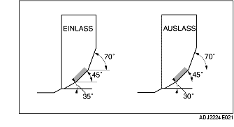

VENTILSITZ PRÜFEN/REPARIEREN
B3E011010280E01
1. Die Kontaktflächenbreite des Ventiltellers und Ventilsitzes mit dem Läpp-Mittel (rotes Blei) bestimmen.
-
• Wenn die Vorgabe nicht erfüllt wird, den Ventilsitz mit einem 45° Ventilsitzschneider nachschneiden und/oder den Ventilteller nacharbeiten.

-
Sollwert Ventilsitz-Kontaktbreite
-
0,8-1,4 mm {0,032-0,055 in}
2. Prüfen, ob sich die Ventilsitzposition im Mittelpunkt der Ventilsitzfläche befindet.
-
• Falls die Ventilsitzposition zu hoch liegt, den Ventilsitz mit einem 70° (EINLASS) 70° (AUSLASS)-Schneider und einem 45°-Schneider korrigieren.
-
• Falls die Ventilsitzposition zu tief liegt, den Ventilsitz mit einem 35° (EINLASS) 30° (AUSLASS)-Schneider und einem 45°-Schneider korrigieren.
3. Ventilsitz auf Sitzsenkung prüfen. Den überstehenden Teil (Abmessung L) des Ventilschafts mit einem Ventil der Solllänge messen.
-
• Wenn die Vorgabe überschritten wird, den Zylinderkopf austauschen.
-
Sollwert Sitzsenkung Ventilsitz
-
39,29 mm {1,5468 in}